Личный и семейный бюджет
Как пользоваться
финансовым планом
Задайте доходы, расходы и цели. План покажет, как распределить каждую выплату, к каким датам хватит денег и где потребуется изменить приоритеты.
Нажмите на скриншот, чтобы увеличить его. Разделы можно искать по слову или открыть из содержания. Руководство доступно по значку вопроса в шапке приложения.
Ничего не найдено. Попробуйте другое слово или очистите поиск.
01 / Первые шаги
С чего начать
В личном плане основная единица — выплата: аванс, зарплата или разовый доход. Из неё покрываются расходы, долги, семейный взнос и накопления. Суммы будущих выплат и отчислений — прогноз; по мере уточнения данных он пересчитывается.
- Откройте «Настройки → План». Назовите свой план. При входе открывается ваш личный план с ролью владельца.
- Добавьте год и график выплат. В «Годы плана и график выплат» создайте год, затем задайте названия выплат, даты и расчётные периоды.
- Укажите оклад и налог. Для оклада важна дата начала действия и признак суммы до налога. Проверьте налоговую шкалу для нужного года.
- Создайте выплаты года. Кнопка находится под графиком. В «Доходах» появятся карточки с рассчитанными суммами.
- Добавьте категории, долги и цели. Затем проверьте распределение в «Доходах» и годовую картину в «Обзоре».
Пример графика из двух выплат
«Аванс» — 20-го числа за 1–15-е текущего месяца. «Зарплата» — 5-го следующего месяца за 16-е–конец месяца. Для второй выплаты задайте смещение месяца +1. Если день выплаты нерабочий, используйте правило переноса, соответствующее вашему графику.
Названия не ограничены авансом и зарплатой: можно сделать одну, две или больше автоматических выплат.
Если дохода по окладу нет, суммы можно вести разовыми выплатами. Встроенного заполнения плана примером нет: добавляйте свои данные по шагам. Подсказки первого входа помогают перейти к нужным блокам, их можно закрыть.

03 / Основа расчёта
Настройки и производственный календарь
Блоки настроек раскрываются нажатием на заголовок. В каждом году график выплат раскрывается отдельно. В свёрнутом виде видны количество выплат и основные действия.
- Оклад: новая запись с датой начала задаёт изменение зарплаты с этой даты. Уточните, указываете сумму до налога или на руки. Признак общего повышения используется в расчёте среднего для отпускных.
- Налог: шкала и её ступени определяют переход от начисленного к сумме на руки. Последняя ступень может быть без верхней границы.
- История доходов: для точного расчёта отпускных обязательно заполните начисленный доход до НДФЛ за каждый из 12 календарных месяцев перед месяцем начала отпуска. Эти суммы нужны для среднего заработка и не создают отдельные поступления в текущий план. Пример расчётного периода.
- Порядок распределения выплаты: переставьте этапы стрелками и задайте параметры категорий, долгов, целей и семьи. Очередь влияет на то, кому достанутся доступные деньги.

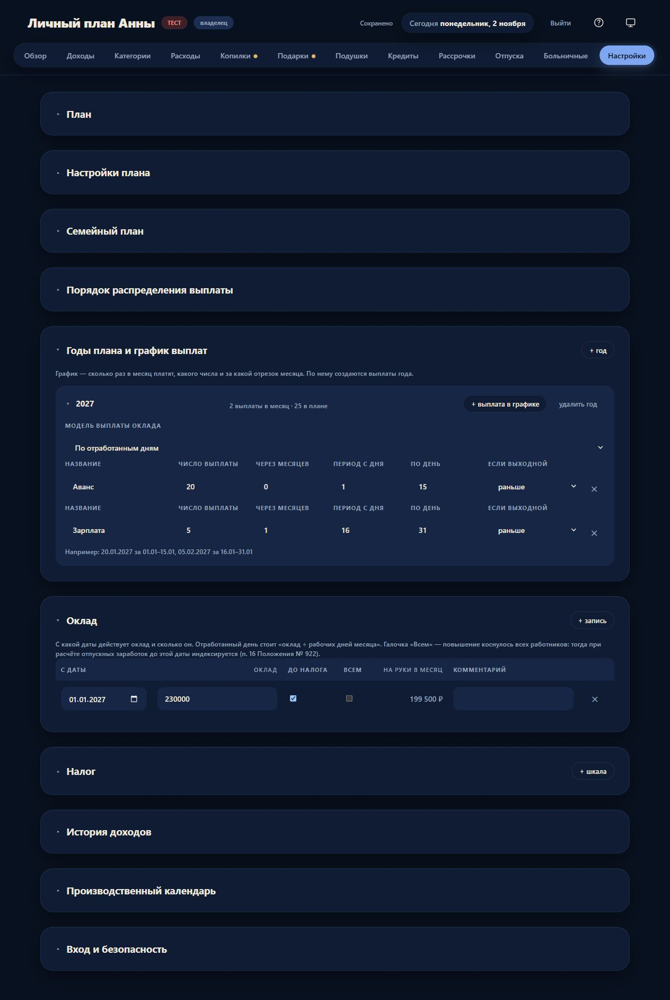
Две модели выплаты оклада
В раскрытом графике каждого года выберите модель: «По отработанным дням» либо «В процентном соотношении». Выбор действует на этот год. Прежние планы используют модель по дням.
В процентной модели задайте долю оклада для каждой выплаты. Сумма не может превышать 100%; для запуска расчёта она должна быть ровно 100%. Все выплаты, кроме последней, получают свою долю оклада с поправкой на отношение отработанных рабочих дней периода ко всем рабочим дням этого периода. Последняя по дате выплата — окончательный расчёт: оклад за фактически отработанный месяц минус предыдущие окладные выплаты этого месяца. Разовые доходы в это вычитание не входят.
Пример: 50% аванс и окончательный расчёт
Оклад 223 000 ₽ до налога, ставка НДФЛ 13%. В июле 23 рабочих дня, отпуск 6–10 июля. Из 11 рабочих дней первого периода отработано 6, за месяц — 18. Аванс: 223 000 × 0,87 × 50% × 6/11 ≈ 52 912 ₽. Зарплата: 223 000 × 0,87 × 18/23 − 52 912 ≈ 98 922 ₽.
За полностью отработанный август при таком окладе получаются две выплаты по 97 005 ₽. Даты, периоды и переносы по календарю настраиваются как обычно. При другой налоговой шкале применяется она; начисления и налог округляются по выплатам, поэтому возможна разница в рубль с сокращённой формулой на руки.

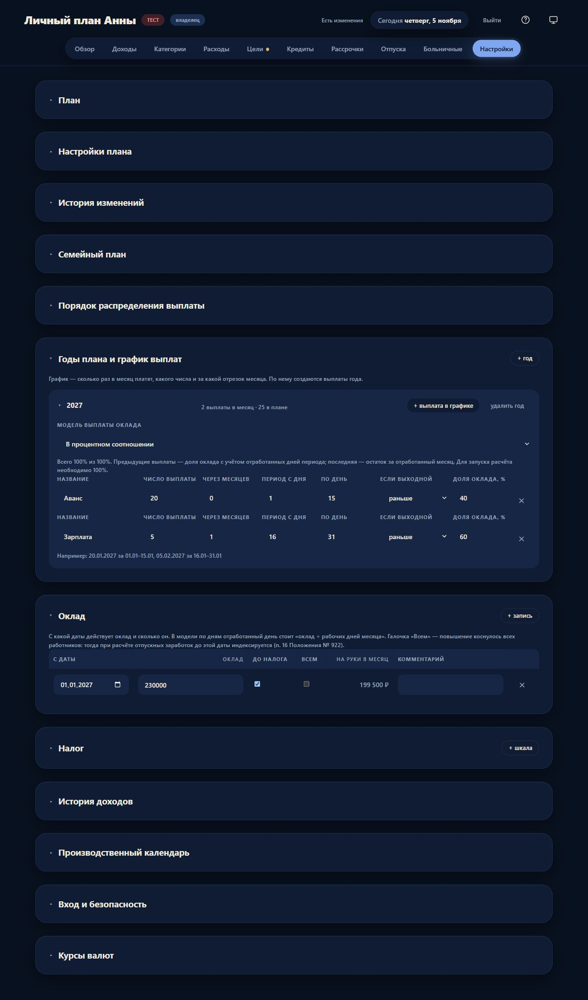
Введённые вручную и зафиксированные суммы не заменяются новой моделью: они засчитываются в остаток месяца. При изменении модели проверьте ручные рамки. Если предыдущие выплаты уже превысили начисление за месяц, итоговая выплата не становится отрицательной: карточка показывает предупреждение, автоматическая фиксация ожидает уточнения.
Как изменить рабочий день
- Откройте «Производственный календарь».
- Листайте месяцы стрелками. Нажатие на название месяца и год открывает быстрый выбор года и месяца.
- Выберите день. Для рабочего доступно «Сделать нерабочим», для нерабочего — «Сделать рабочим».
- Чтобы убрать собственное исключение, верните день «По календарю».
Рабочие дни считаются по календарю и вашим исключениям. Их изменение влияет на автоматический оклад и перенос дат выплат. Проверяйте производственный календарь для нужного года.
04 / Общая картина
Обзор за год
«Обзор» собирает доход, расходы, отчисления в цели и свободный остаток выбранного года. Здесь удобно оценить, выполним ли план целиком, а затем перейти к конкретной выплате или цели.

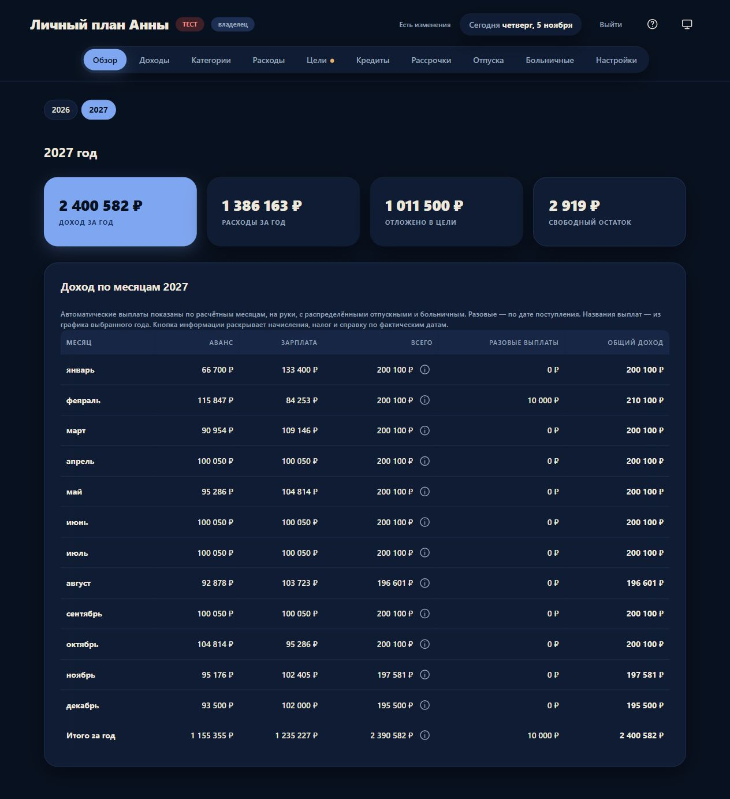
В таблице доходов сначала идут автоматические выплаты с названиями из графика этого года, затем их итог «Всего», разовые выплаты и «Общий доход». Внизу — суммы за год. Если автоматическая выплата одна, соответствующий столбец тоже один.
Нажмите значок информации у суммы, чтобы увидеть начисление до налога, ставки и удержанный налог. Справка также показывает отпускные и больничный по их фактическим датам поступления. Эти справочные суммы уже включены в распределённые доходы: второй раз прибавлять их к итогу не нужно.
Автоматические выплаты относятся к расчётным месяцам, разовые — к месяцу поступления. Поэтому зарплата за декабрь с выплатой в январе требует внимания к расчётному году и месяцу, а не только к дате на карточке.
Расходы по категориям и подкатегориям
Нажмите плитку «Расходы за год». Строки категорий выделены фоном, жирным шрифтом и цветной полоской слева; между группами оставлен промежуток. Под ними показаны статьи и подкатегории, годовой план, факт и разница. Колонки среднего в деньгах показывают годовую сумму, делённую на 12, включая нулевые месяцы. Например, план 120 000 ₽ за год — это в среднем 10 000 ₽ в месяц. Итоги суммируют категории один раз: строки подкатегорий раскрывают их состав.
В блоке «Долги» расходы сведены к двум годовым суммам: «Рассрочки» и «Кредитки». Подробности по отдельным покупкам и картам доступны в соответствующих разделах и в Доходах.

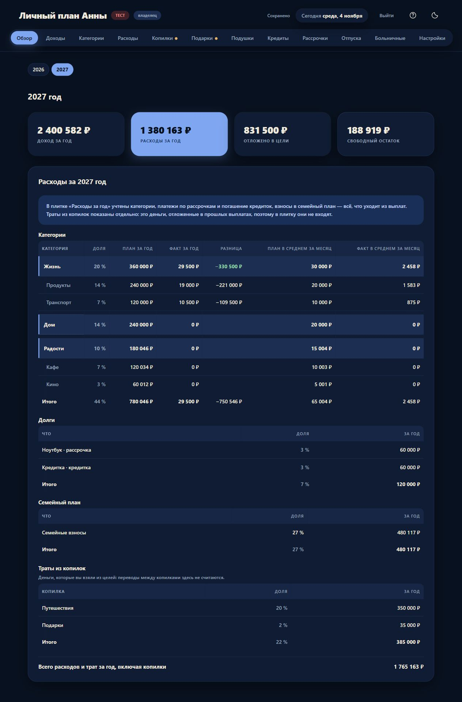
05 / Каждая выплата
Доходы и распределение
В свёрнутой карточке видны дата, тип выплаты, доход и основные итоги. «Долги» включают кредитки и рассрочки. Раскройте карточку, чтобы увидеть сумму на руки, расходы по категориям, долги, семейный взнос и отчисления в цели.

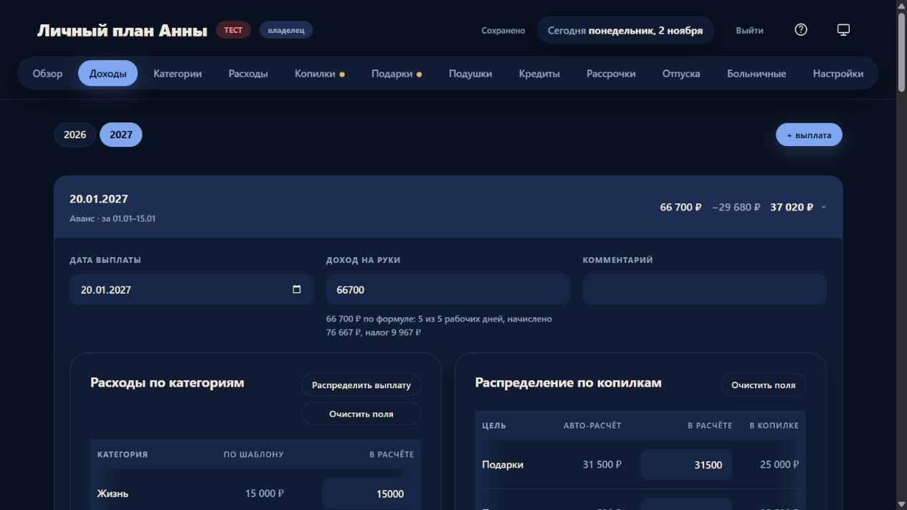

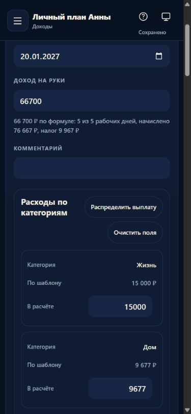
Автоматическая сумма и ручная правка
Пока автоматический доход не исправляли вручную, он обновляется при изменении оклада, отпуска, больничного и календаря. Введите свою сумму — она закрепится как ручная и получит выделенную рамку. «Подставить по формуле» возвращает автоматический расчёт.
Так же работают ручные суммы расходов, отчислений и платежей там, где приложение предлагает расчёт. Рамка помогает найти собственные значения. В Настройках обычные введённые параметры таким признаком не отмечаются.
Как добавить разовую выплату
- В «Доходах» откройте добавление разовой выплаты.
- Укажите дату, месяц учёта, вид дохода, сумму и комментарий.
- Уточните, облагается ли выплата налогом, и добавьте её.
Разовая выплата независима от оклада: к ней не присоединяются отпускные и больничный. Её собственная сумма участвует в общем распределении.
Пример: подработка 10 000 ₽
Добавьте отдельную разовую выплату на дату поступления. Не увеличивайте для этого окладную карточку: так подработка останется отдельной строкой и попадёт в столбец разовых доходов Обзора.
Что делают кнопки распределения
«Распределить выплату» в расходах сначала рассчитывает процентные категории, затем распределяет оставшуюся сумму между активными фиксированными категориями пропорционально их планам. Это действие может отдать категориям всю доступную сумму — проверьте итог для накоплений. «Очистить поля» в соответствующем блоке убирает ручные значения и возвращает расчёт.
Прошедшие выплаты фиксируются, чтобы история не менялась при правке будущих настроек. Для осознанного изменения уже закреплённой личной выплаты доступна разблокировка; после неё проверьте связанные расчёты. Более ранние выплаты открываются кнопкой «Показать предыдущие выплаты», начиная с ближайшей скрытой.
Положительный свободный остаток — деньги, оставшиеся после распределения. Отрицательный итог показывает нехватку. Перенос денег в цель с более высоким приоритетом не создаёт новый доход: он меняет доступную сумму для остальных.
06 / Шаблоны расходов
Категории расходов
Категория задаёт правило для будущих выплат. Её заголовок выделен фоном и цветной полоской. В раскрытой карточке отдельно показаны настройки категории, статьи или подкатегории в собственных блоках, а внутри них — период действия и суммы по сезонам в рамках. Раскройте нужную карточку, чтобы изменить состав, сумму и период действия.

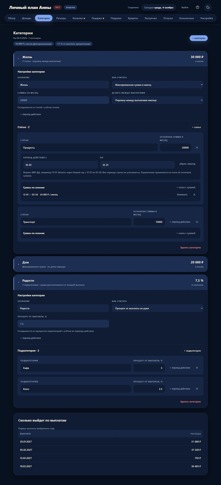
| Режим | Что вводить | Пример |
|---|---|---|
| Фиксированная сумма в месяц | Месячную сумму или суммы отдельных статей. Выберите способ деления между выплатами. | 30 000 ₽ при двух равных долях — по 15 000 ₽. |
| Процент от выплаты на руки | Процент; сумму месяца вводить не нужно. Если есть подкатегории, процент категории складывается из них. | 5 % на кафе + 2,5 % на кино = 7,5 %. Из выплаты 80 000 ₽ это 6 000 ₽. |
Процент подкатегории считается от полной выплаты, а не от суммы родителя. По умолчанию база — выплата на руки с её отпускными и больничным. Если в порядке распределения явно выбрана другая база, учитывается эта настройка. Ручная сумма категории в конкретной выплате имеет приоритет перед шаблоном.
Период действия и сезонная сумма
Период действия ограничивает, когда строка вообще применяется. Сезон с суммой меняет размер фиксированного месячного бюджета внутри указанных дат. Вне сезонов действует основная сумма. Если категория состоит из статей, сезонные суммы задавайте в статьях.
Пример: отопление только зимой
Основная сумма статьи — 0 ₽. Добавьте сезон с 11-01 по 03-31 и суммой 3 000 ₽ в месяц. Можно добавить другие непересекающиеся сезоны с другими суммами. Даты вводятся как ММ-ДД, переход через Новый год поддерживается. Подтвердите сезон кнопкой «Применить».
У процентной категории и каждой её подкатегории можно задать сезон через «Период действия»: внутри него применяется указанный процент, вне — 0. Сезоны с отдельными денежными суммами используются для фиксированных месячных расходов.
07 / Сверка с реальностью
План и факт расходов
Выберите год и месяц в «Расходах». План берётся из распределения выплат этого расчётного месяца. Введите фактические суммы по категориям или их статьям. Отклонение — разница между фактом и планом; заметный перерасход подсвечивается с учётом допуска из настроек.

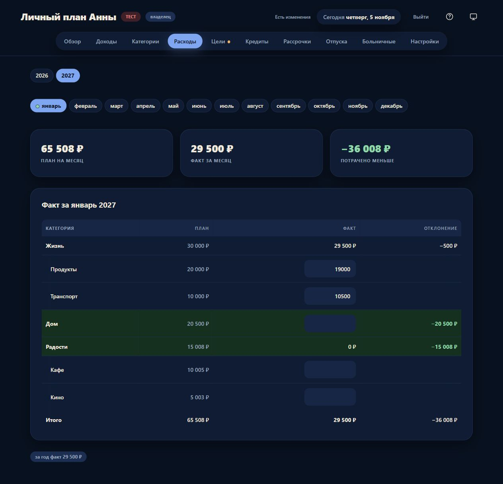
Пример: продукты
План — 20 000 ₽, факт — 21 500 ₽. Отклонение составит +1 500 ₽. Если такие траты повторяются, увеличьте будущий бюджет категории, а не только запись факта.
Ввод факта ведёт статистику и сам по себе не списывает деньги из целей и не переписывает распределение выплат. Строки вне своего периода действия могут быть скрыты; ранее записанный факт при этом сохраняется и учитывается в итогах.
08 / Накопления
Копилки и Подушки
Копилка подходит для цели к дате, этапов, повторяющихся накоплений и будущих трат. Подушка получает заданный темп за выплату и, если он есть, свободный остаток. Для обеих задаются текущая начальная сумма, валюта, цель и приоритет.
Темп подушки — желаемый взнос. В автоматических выплатах он уменьшается, если иначе не хватит денег на подарки и копилки к их срокам; собственный срок подушки этому не мешает. Поэтому при росте расходов сначала может уменьшиться пополнение подушки. Это помогает сохранить сроки других целей, если доступных денег в целом достаточно. Ручные суммы и зафиксированные выплаты автоматически не уменьшаются.
Накопления в валюте
Выберите валюту цели: её сумма, начальный остаток, темп подушки и движения задаются в этой валюте. Из выплат списывается эквивалент в базовой валюте плана. Например, при условном курсе 100 ₽ за доллар взнос 5 000 ₽ увеличивает долларовую копилку на 50 $, а цель 2 000 $ требует 200 000 ₽.
Для будущих накоплений используется курс ЦБ, действующий на сегодняшний день расчёта, одинаковый для всех будущих выплат. Новые курсы загружаются при открытии плана и возвращении в приложение в новый день; изменение курса пересчитывает прогноз. Дата и значение курса видны в карточке валютной цели. Опубликованный заранее курс на завтра не применяется сегодня. В выходной используется последний действующий курс.
Данные загружаются через публичное JSON-зеркало cbr-xml-daily.ru. Редактор сохраняет курсы в плане; читатель получает их для просмотра без записи. Если загрузка недоступна, показываются сохранённый курс и предупреждение. Если подходящего курса нет, валютная цель не получает автоматических отчислений и показывает причину. Зафиксированные выплаты используют сохранённую историю курсов по датам выплат.

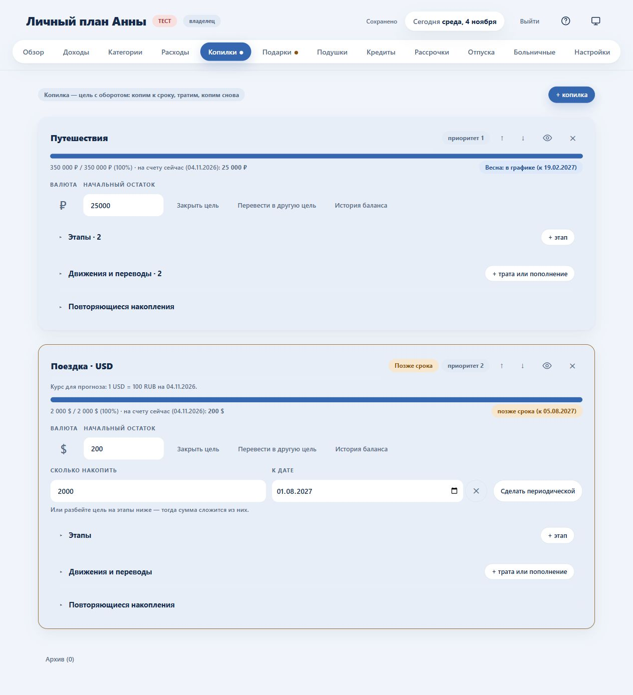

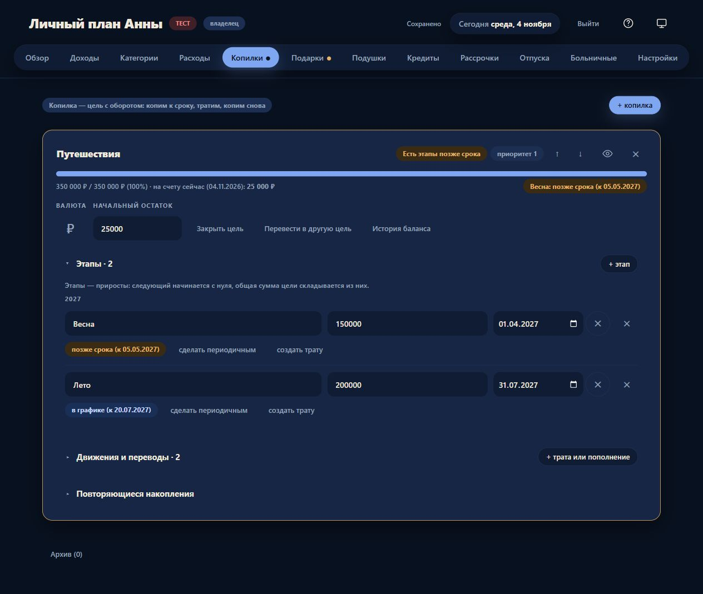
- Нажмите «+ копилка» или «+ подушка» и задайте название.
- Нажмите знак валюты, чтобы выбрать другую из палитры доступных валют.
- Укажите начальный остаток. Затем задайте одну общую сумму и срок либо добавьте несколько этапов с собственными суммами и датами.
- При необходимости добавьте траты, пополнения, переводы или повторяющийся шаблон.
- Проверьте прогноз и отчисления в карточках Доходов. Стрелки приоритета меняют очередь активных целей одного типа.
Суммы этапов — отдельные приросты: общая сумма цели складывается из них. «На счету сейчас» — баланс с учётом движений к текущей дате. Прогресс показывает выполнение накопления. Эти показатели могут различаться, особенно после трат и закрытия цели. Оранжевый прогноз означает, что по текущему плану деньги накопятся позже срока.
Чтобы убрать необязательный срок цели или этапа, нажмите крестик «Сбросить дату» рядом с полем даты. Изменение сохраняется автоматически. Эта кнопка доступна и в Safari; она не зависит от кнопки сброса внутри системного календаря.
Пример: поездка с двумя этапами
Этап «Билеты» — 60 000 ₽ к 1 апреля, этап «Отель» — 90 000 ₽ к 1 июня. Если билеты планируете оплатить в апреле, добавьте отдельную трату: расчёт учтёт её до накопления следующего этапа.
Ручная прибавка в одной выплате может уменьшить последующие автоматические взносы, если потребность к сроку уже покрыта. Оценивайте итог к нужной дате, а не только одинаковость отчислений.
Закрытие, архив и глазик — разные действия
| Действие | Результат |
|---|---|
| Закрыть цель | Останавливает дальнейшее распределение и прогноз, убирает приоритет. Накопленный прогресс фиксируется; последующие движения меняют баланс. |
| В архив | Убирает закрытую цель из основного списка Копилок или Подушек. Архив открывается отдельной кнопкой. |
| Вернуть из архива | Возвращает в основной список, сохраняя цель закрытой. |
| Вернуть в работу | Снова включает цель в расчёты и ставит в конец очереди активных целей. |
| Глазик рядом с удалением | Скрывает только с Обзора. Перечёркнутый глазик с подсказкой «Вернуть в Обзор» возвращает видимость. |
Архив сам по себе не скрывает цель с Обзора. При этом действует отбор по годам: накопленная цель со сроком в 2027 году не обязана показываться в 2028-м. Скрытие глазиком не меняет расчёты, удаление — меняет данные.
09 / Праздники
Подарки
В «Подарках» заведите события: название, день и месяц, повторение и сумму на нужный год. Праздники формируют потребность копилки подарков к своим датам. Порядок распределения определяет положение этого этапа среди остальных расходов и целей.
На телефоне каждый праздник показан отдельной карточкой: название, дата, сумма и повторение занимают всю её ширину. Ниже расположен годовой план с суммами и прогнозом по каждому празднику.

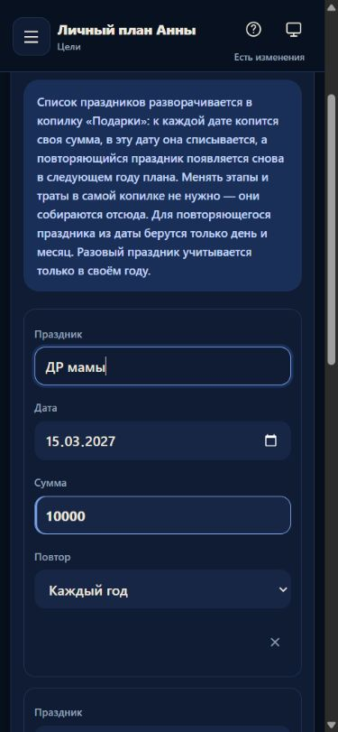
Пример: день рождения
Создайте событие «День рождения» на 15 марта с ежегодным повторением и суммой 10 000 ₽ на 2027 год. Для 2028 года можно задать другую сумму. Ручное изменение годовой суммы сохраняется отдельно от автоматического значения.
Проверьте в Доходах, успевает ли копилка накопить деньги к каждому событию. Если нет — измените сумму, доступный доход или приоритеты и посмотрите новый прогноз.
10 / Обязательства
Кредитки и рассрочки
Кредитки
Раздел «Кредиты» ведёт карты, их лимиты, льготный период и операции. Добавьте карту, затем внесите траты и погашения вне плана. Плановые погашения рассчитываются по выплатам и видны в Доходах. Не записывайте одно и то же погашение одновременно как плановый платёж и как отдельную операцию.

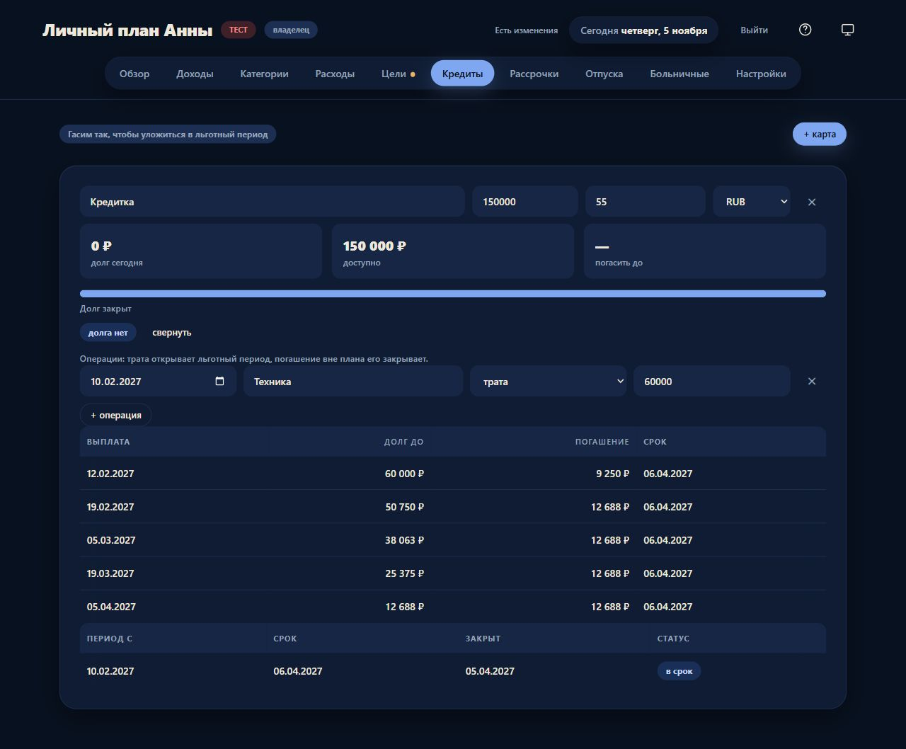
Рассрочки
Добавьте покупку, общую сумму, число частей, интервал и дату первого платежа. Приложение построит график и отнесёт платежи к выплатам. Отдельные суммы и даты можно исправлять вручную. Пересборка будущего графика сохраняет ручные поля; «Пересоздать график с нуля» затрагивает и прошедшие платежи.

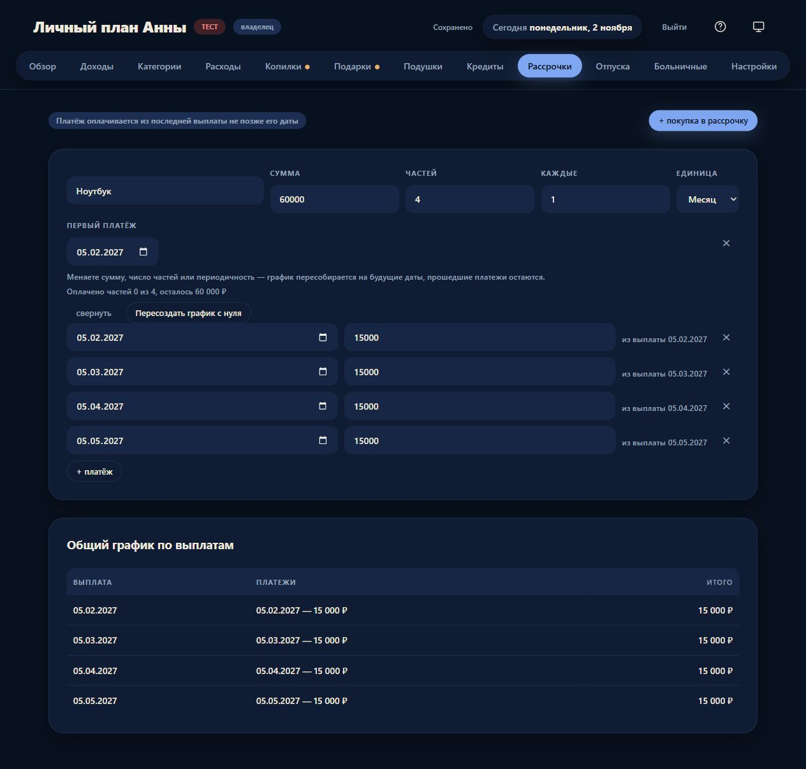
Настройки досрочного погашения находятся в «Настройки → Порядок распределения выплаты». На досрочное погашение направляется свободный остаток после обычного распределения. Для рассрочек этот режим по умолчанию выключен. Порядок кредиток и рассрочек берётся из очереди этапов.
Пример досрочного погашения
Осталось четыре части по 6 000 ₽. Если дополнительно направить 12 000 ₽ свободного остатка, они пойдут в счёт ближайших будущих частей. Следующие выплаты оплатят только непогашенную часть графика. Уже закреплённые платежи другой выплаты не уменьшаются.
План помогает распределять деньги; внесение записи в приложении само по себе не делает банковский платёж. Даты и условия льготного периода сверяйте с условиями своей карты.
11 / Отсутствие на работе
Отпуска
Обязательная история для точного расчёта
Перед расчётом отпускных заполните «Настройки → История доходов» за все 12 календарных месяцев перед месяцем начала отпуска. Вводите начисленный доход до удержания НДФЛ, а не сумму, полученную на карту.
Например, для отпуска в августе 2027 года нужен период с августа 2026 по июль 2027 включительно. Месяц начала отпуска в эти 12 месяцев не входит. Для следующего отпуска проверьте его собственный расчётный период.
Незаполненная история не блокирует расчёт: программа может использовать выплаты плана. Поэтому без полной истории и проверки месячных начислений результат может быть неточным.
- В «Отпусках» выберите год и нажмите «+ отпуск».
- Задайте название, начало и окончание. Если отпуск пересекает Новый год, он находится в году своей даты начала.
- Нажмите «как считаем» и проверьте начисления каждого месяца и расчёт среднего.
- Если есть подтверждённая сумма, введите её в «Начислено в плане» — до налога. Кнопка «по формуле» вернёт автоматический расчёт.
- Проверьте сумму на руки, дату «Выплатят» и распределение между выплатами оклада.

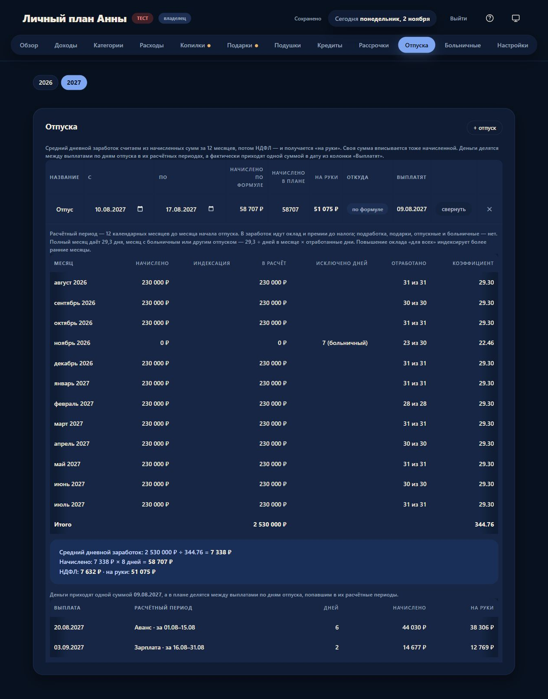
Рабочие дни отпуска уменьшают автоматический оклад. Отпускные распределяются по расчётным периодам, в которые попали дни отпуска, а не в разовые выплаты. Фактически деньги могут прийти одной суммой раньше; это отражается в справке Обзора.
Если вручную меняли доход окладной выплаты, он сохранится. Для автоматического обновления верните его к формуле. Прошедшие отпуска скрываются за кнопкой показа предыдущих записей, но остаются в расчётах.
12 / Больничный
Больничные
Раздел ведётся отдельно от отпусков. Выберите год начала листа и добавьте больничный. Укажите даты, причину и условия расчёта. Для обычного расчёта нужны страховой стаж и заработок за два расчётных года. Для особых случаев можно использовать подтверждённые начисления.

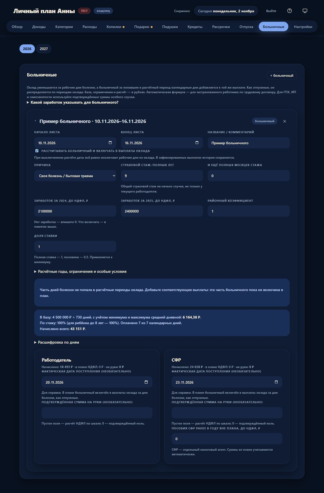
Какой заработок вводить
Для этих полей используйте годовой заработок до удержания НДФЛ, учитываемый для пособий. Надёжный источник — данные СФР или бухгалтерии с таким назначением. Это отдельная база: её не нужно подменять суммами, полученными на карту, или историей для отпускных.
В справке «Какой заработок указывать для больничного?» внутри приложения разобраны зарплата, премии, отпускные, пособия и выплаты с частичным освобождением от взносов. Если состав годовой суммы неизвестен, уточните именно учитываемый заработок у бухгалтерии.
Проверьте части работодателя и СФР, их налог и суммы на руки. Подтверждённое значение на руки можно ввести отдельно, затем при необходимости вернуть формулу. Фактические даты поступлений используются для справки, распределение идёт по расчётным периодам оклада.
Рабочие дни болезни уменьшают автоматический оклад; рассчитанный больничный за календарные дни добавляется к соответствующим окладным выплатам. Отдельные разовые выплаты для этого не создаются. Если для части дней нет подходящего периода, карточка сообщает об этом — проверьте график оклада.
Для неизвестного года или особых условий приложение может запросить дополнительные параметры или подтверждённые суммы. Больничный и отпуск имеют разные базы среднего заработка. Пересечение болезни с отпуском само по себе не переносит даты отпуска в плане.
Планирование / Обновлено 4 ноября 2026
Сценарии, объяснения и отмена
Попробовать изменение без правки основного плана
- В личном плане откройте «Сценарии и история → А если…».
- Нажмите «+ Новый сценарий» и задайте название.
- Выберите изменение: расходы в месяц, доход в месяц, разовую покупку или изменение курса в процентах. Для уменьшения введите отрицательную сумму. Для изменения расходов существующей категории выберите её; «Дополнительные расходы» добавляют расход только в копию.
- Укажите даты и при необходимости нажмите «+ Ещё изменение». Изменения применяются по порядку. Доходы и расходы распределяются между доступными незакреплёнными выплатами расчётного месяца. Покупка покрывается из последней незакреплённой выплаты не раньше сегодня и не позже даты покупки. Если подходящих выплат нет, появится сообщение; такая покупка не включится в сравнение.
- Выберите год над разделом. Таблица сравнит доходы, расходы, накопления и свободный остаток, а также изменившиеся даты достижения целей. Валютный сценарий меняет текущий курс всего будущего прогноза; для него нужен загруженный курс выбранной валюты.
- Нажмите «Сохранить сценарий», чтобы открыть его позже по названию. Можно сохранить до 20 сценариев. Предпросмотр и сохранение сценария не меняют основной план.
Сценарии каждый раз сравниваются с текущим личным планом. После изменения основного плана их результат тоже изменится. Сценарии сохраняются в этом браузере отдельно для пользователя и плана; они не переносятся на другие устройства и удаляются при очистке данных сайта.

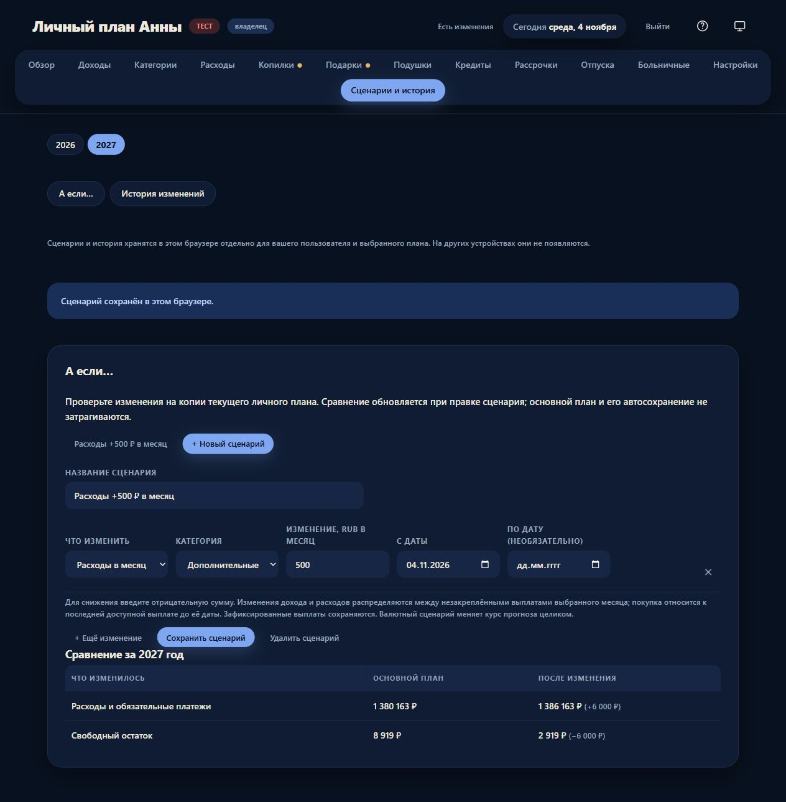
Почему изменился прогноз
После правки личного плана появляется блок «Почему изменился прогноз». Он показывает действие, изменение годовых сумм и количество целей с изменившимися сроками. Ссылка «Подробнее в истории» открывает прежние и новые значения полей и сравнение прогноза. Если для выбранного года денежные суммы не изменились, краткое объяснение использует первый затронутый год. Изменение даты прогноза может касаться другого года.

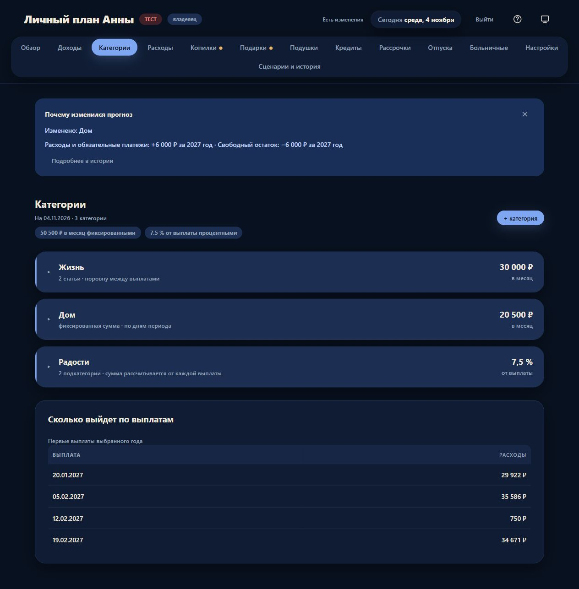
Отменить действие
- Откройте «Сценарии и история → История изменений».
- Раскройте «Что изменилось и как повлияло на прогноз», чтобы проверить старые и новые значения.
- У последнего неотменённого действия нажмите «Отменить действие». Отмена отправляет восстановленные значения в основной план. Связанные правки, например удаление категории и её статей, восстанавливаются вместе.
В истории сохраняются последние 50 действий в этом браузере после подключения этой функции. Автоматические служебные обновления и сценарии не записываются как пользовательские правки. Отменять можно последовательно от новых действий к старым. Читатель не может отменять изменения. История личного плана отделена от журнала семейного плана.

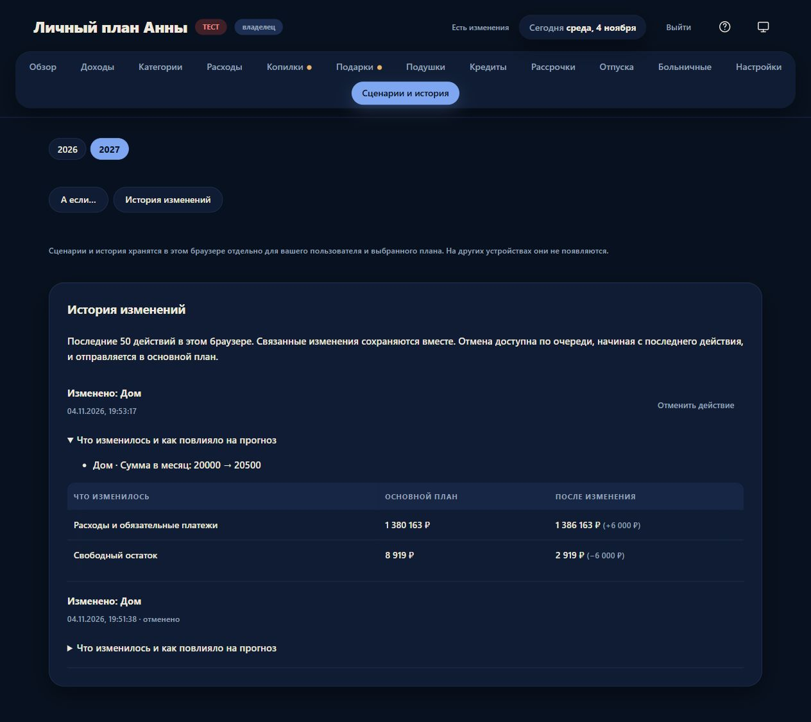
Перед отменой приложение сохраняет текущие правки и проверяет свежие данные в БД. Если затронутое поле уже изменено, отмена остановится, сохранив более позднее значение. Несвязанные изменения остаются. При ошибке сохранения действие не помечается отменённым; проверьте связь и повторите отмену. Ограничения проведённых семейных взносов продолжают действовать. Если хранилище браузера недоступно или заполнено, новые записи могут остаться только до закрытия страницы — раздел показывает предупреждение.
13 / Вместе
Семейный план
Семейный план — отдельный общий бюджет. В него поступают отчисления из личных выплат участников. Личные категории и цели автоматически не объединяются с семейными.
Создать семью и подключить взносы
- В личных Настройках раскройте «Семейный план» и создайте семью либо примите приглашение.
- В семейных Настройках, в блоке «Участники семьи», пригласите пользователя по почте. Приглашение действует 7 дней; до принятия у адресата нет доступа к бюджету.
- В своём личном плане выберите «Источник взносов» и настройте способ отчислений. Само вступление ещё не включает взносы.
- Проверьте положение семейного этапа в порядке распределения и суммы в личных Доходах.
| Правило | Как работает |
|---|---|
| Сумма с выплаты | Заданный взнос с каждой подходящей выплаты, с учётом доступных денег и ограничений. |
| Сумма за месяц | Общая месячная цель распределяется между выплатами. Обязательный недобор прошлых месяцев погашается раньше нового. |
| Процент от выплаты | Взнос считается от полной суммы выплаты на руки. |
| Свободный остаток | Используется доступный остаток с выбранными лимитами на выплату или месяц. Неиспользованный лимит не становится долгом. |
Потолок с выплаты ограничивает весь взнос из одной выплаты, включая погашение недобора. Лимит свободного остатка относится к этому способу взносов и выбранной области — выплате или месяцу. Подключение в этой версии поддерживается для RUB; правило начинает действовать не раньше сохранения.
Один аккаунт участвует в одной семье. Один личный источник нельзя одновременно подключить двум участникам. После первого проведённого взноса смена источника в рамках этого участия недоступна.
Пример: месячный взнос
Месячный план — 30 000 ₽, уже передано 12 000 ₽. Если изменить план этого месяца на 25 000 ₽, останется передать 13 000 ₽. Если снизить его до 10 000 ₽, деньги обратно не возвращаются, новых взносов по этому плану за месяц не будет.
При смене месячного режима на другой неоплаченный остаток текущего месяца отменяется. Недобор более ранних месяцев сохраняется.
Обзор, Доходы, Категории и Расходы семьи
Навигация устроена по годам. Обзор показывает полученные и ожидаемые взносы каждого участника и расходы за год. В Доходах карточки выделены цветами участников. Можно выбрать «Мои взносы», всех или конкретного участника.

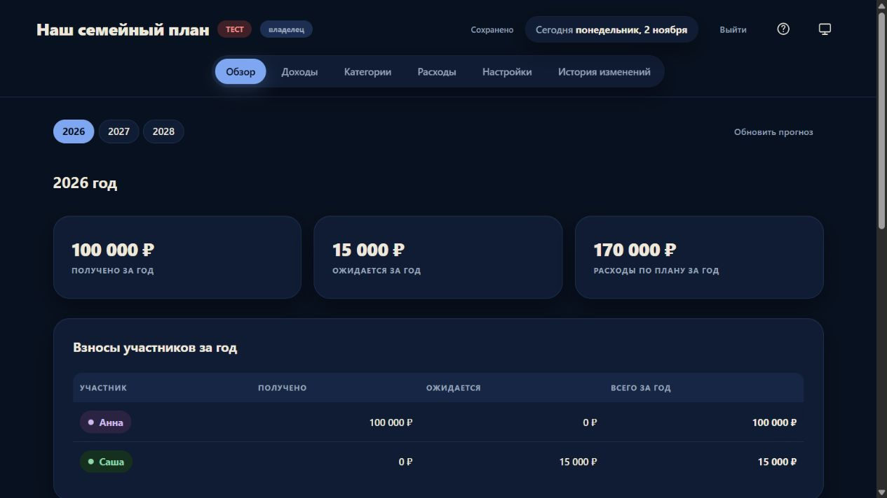
Все участники видят взносы и распределения друг друга. Сумму и распределение будущего взноса меняет только его автор. Проведённые взносы зафиксированы. Общими категориями и фактом расходов участники управляют совместно.

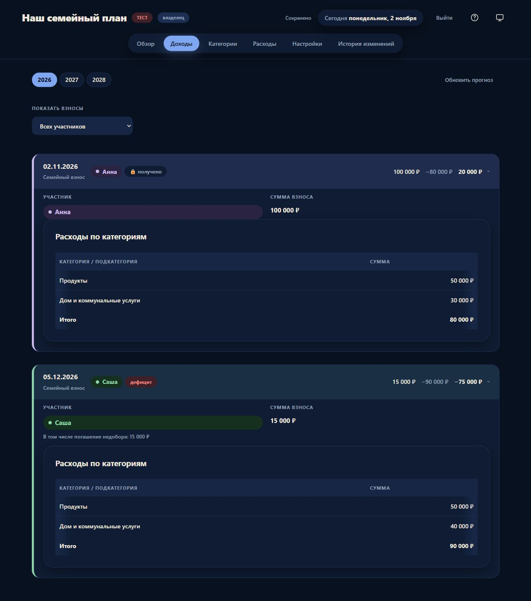
Семейная категория задаётся фиксированной суммой на месяц или процентом от всех полученных и ожидаемых взносов этого месяца. Фиксированная сумма распределяется между взносами пропорционально их размерам. Проведённые распределения и закрытые месяцы сохраняются; при изменении будущих взносов пересчитывается только оставшаяся часть.
Пример семейной категории
В месяце ожидается 100 000 ₽ взносов: 60 000 ₽ от одного участника и 40 000 ₽ от другого. Категория «Продукты» с планом 30 000 ₽ получит соответственно 18 000 ₽ и 12 000 ₽. Категория 20 % составит 20 000 ₽. После проведения первого взноса его распределение уже не переписывается.
Остатки и дефицит семейных категорий не переносятся автоматически на следующие месяцы. Факт расходов служит статистикой и не меняет взносы. Срок проведения определяется датами выплат по Москве; при настроенной серверной обработке взносы проводятся и при закрытом приложении.
Участники и история
В «Участниках семьи» нажмите свой никнейм, чтобы изменить его, и цветной кружок, чтобы выбрать цвет из палитры. Здесь же находятся приглашения и их статусы. Другим участникам видны семейные взносы, но не ваш личный оклад и параметры личного правила.
Кнопка «Уйти за хлебом и не вернуться» выходит из семьи после предупреждения. Будущие взносы прекращаются, проведённая история сохраняется у оставшихся. Если уходит последний участник, семейный план удаляется из доступа с отдельным предупреждением.
«История изменений» хранит записи за скользящий последний месяц: например, 15 ноября — с 15 октября. Старые записи очищаются. На странице по 10 последних записей; используйте номера страниц, «Назад», «Вперёд» и «Обновить». Очистка журнала не удаляет сами взносы и их распределения.
14 / Ваш аккаунт
Вход, тема и безопасность
Значок солнца, месяца или компьютера в шапке переключает светлую, тёмную и системную тему. Системный режим следует настройке устройства. Выбор запоминается в этом браузере и применяется также к руководству.
В «Настройки → Вход и безопасность» находятся смена пароля, смена почты и поддерживаемые способы входа по Face ID / Touch ID. Возможность биометрического входа зависит от устройства и доступности этого способа. После запроса смены почты подтвердите новый адрес по письму.
Добровольное удаление аккаунта
Кнопка «Удалить аккаунт» открывает предварительный список последствий. Личные планы без других участников удаляются. Общие планы и семейная история сохраняются оставшимся с обезличиванием удаляемого участника. Если вы единственный владелец обычного общего плана, сначала нужно передать владение другому участнику. Семья последнего участника удаляется с предупреждением.
Окончательное удаление требует ввода слова «УДАЛИТЬ». Используйте этот экран для удаления учётной записи, а не для очистки отдельной категории или начала нового года.
15 / Если что-то непонятно
Частые вопросы
Поменяла отпуск, а доход не изменился. Почему?
Проверьте ручную рамку и фиксацию выплаты. Собственная сумма или закреплённая история не заменяются автоматическим пересчётом. Для будущей окладной выплаты нажмите «Подставить по формуле», если хотите вернуть автоматический режим.
Добавила деньги в цель, а следующие отчисления уменьшились.
Расчёт учитывает уже заданные суммы. Если потребность к сроку покрывается, будущие автоматические отчисления могут стать меньше. Если прогноз всё ещё позже срока, проверьте доступный доход, даты этапов и трат, ручные суммы других целей и приоритеты.
У цели оранжевая рамка. Где искать причину?
Раскройте её этапы: хотя бы один из них по текущему прогнозу накопится позже срока. Сопоставьте срок с выплатами, которые успеют прийти до этой даты, и с обязательными расходами этих выплат.
Цель в архиве всё ещё видна в Обзоре.
Архив убирает её из активного списка Копилок или Подушек. Для дополнительного скрытия с Обзора нажмите глазик у цели. Годовой отбор тоже продолжает действовать.
Почему отпускные и больничный видны и в выплате, и в справке Обзора?
В выплате показано распределение по окладным периодам. В справке — поступления по фактическим датам. Это разные представления одной суммы; справка не прибавляет её ещё раз к доходу.
Может ли другой участник семьи изменить моё отчисление?
Нет, сумму и распределение вашего будущего взноса редактируете только вы. Остальные видят их. Общие категории и факт семейных расходов доступны всем участникам для совместного ведения.
16 / Под рукой
Короткий словарь
- Начислено
- Сумма до удержания налога.
- На руки
- Сумма после удержания налога.
- Расчётный период
- Дни, за которые начисляется окладная выплата. Её дата поступления может быть в другом месяце.
- Прогноз
- Будущая сумма или дата по текущим данным. Может измениться после правки плана.
- Фиксация выплаты
- Сохранение рассчитанных сумм и распределения как истории.
- Свободный остаток
- То, что осталось от выплаты после распределения.
- План / факт расходов
- Запланированный бюджет и отдельно внесённая статистика реальных трат.
- Приоритет
- Место активной цели или этапа распределения в очереди.
- Этап цели
- Часть цели с собственной суммой и сроком.
- Недобор семейного взноса
- Неоплаченная обязательная часть месячного правила отчислений. Это не то же самое, что дефицит семейной категории.